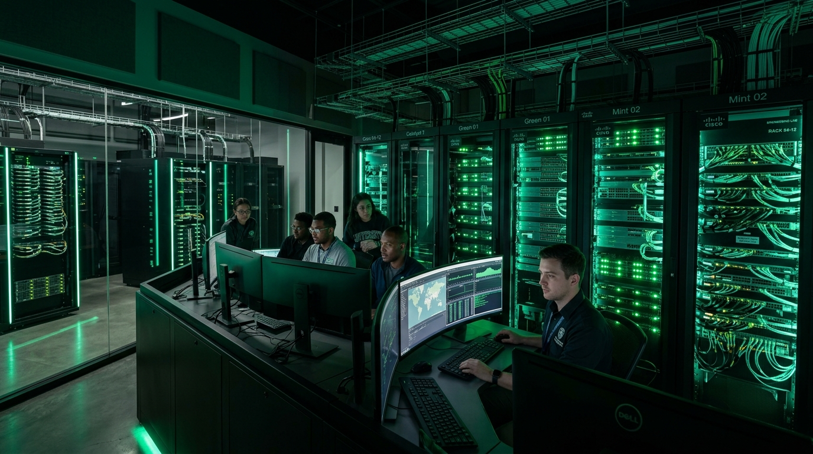

Kvant shifrlash va zamonaviy optik magistrallarning kelajagi
QKD va BB84 protokollari asosida fotonlar orqali axborotni xavfsiz uzatish tamoyillari hamda amaliy tajribalar tahlili.
Uch o‘lchamli fazoda router, modem, server va kompyuterlarni real vaqtda joylashtiring, kabellarni ulang va axborot paketlarining rangli trafigini kuzating.
Matritsalar, determinantlar, chiziqli tenglamalar sistemasi va vektor fazolari nazorati.
Ma'lumotlar bazasining nazariy asoslari va amaliyotda qo'llanilishi.
Elektronika va sxemalar asoslari, Elektronika va sxemalar asoslari, Elektronika va sxemalar asoslari
Diskret matematika asoslari, diskret matematika asoslari, diskret matematika asoslari
Kompyuter tarmoqlari, informatika va dasturlash asoslari, informatika va dasturlash asoslari
ATT-25 laboratoriyasida talabalar tomonidan o‘tkazilgan amaliy mashg‘ulot. Optik tolani tozalash, kesish, payvandlash apparatida birlashtirish va so‘nish ko‘rsatkichlarini (dB) o‘lchash to‘liq ko‘rsatilgan.

Cisco uskunalarida CLI interfeysi, IP manzillar biriktirish, parollarni shifrlash va SSH xavfsiz ulanishini sozlash.
TCP 3-way handshake, DNS so‘rovlari, ARP jadvallari va shifrlanmagan HTTP ma'lumotlarni paketlar sathida tekshirish.
MikroTik routerlarida Bridge VLAN filtering, korporativ tarmoq segmentatsiyasi va pool bilan DHCP server o‘rnatish.
Patch panellar montaji, Cat6A SFTP kabel marshrutlash, optik kross panellar va 10G SFP+ ulanishlar tartibi.
QKD va BB84 protokollari asosida fotonlar orqali axborotni xavfsiz uzatish tamoyillari hamda amaliy tajribalar tahlili.
"Hech kimga ishonma, doim tekshir" konsepsiyasi, mikrosegmentatsiya va Cisco ISE yordamida perimetrni himoyalash usullari.
320 MHz kanal kengligi va Multi-Link Operation (MLO) texnologiyasining korxona ichidagi kechikish vaqtiga ijobiy ta'siri.
Rasmiy xalqaro Cisco Networking Academy portali va sertifikatlash darsliklari.
Kirish ↗Internet va tarmoq protokollarining rasmiy xalqaro spetsifikatsiyalari (RFC 791, RFC 2460).
Kirish ↗Tarmoq paketlarini tahlil qilish, filtrlar yaratish va protokollarni tekshirish bo‘yicha qo‘llanma.
Kirish ↗RouterOS marshrutlash, xavfsizlik devori, VPN va simsiz tarmoqlarni sozlash bazasi.
Kirish ↗Quyidagi simulyatorlardan birini tanlang. Ular alohida to‘liq ekranli 3D fazoviy laboratoriya sifatida ishga tushadi:
Star, Ring, Bus, Tree, Mesh va Ofis topologiyalari, real-time paketlar trafigi va qurilmalar ulanishi.
Ona plata ATX PCB, CPU LGA1700, 16-faza VRM, DDR5, PCIe 5.0 shinalar signallari va mantiqiy ALU darvozalari.
Ushbu o‘quv taqdimoti va laboratoriya uslubiy ko‘rsatmasi PDF hamda PPTX formatlarida tayyorlangan.